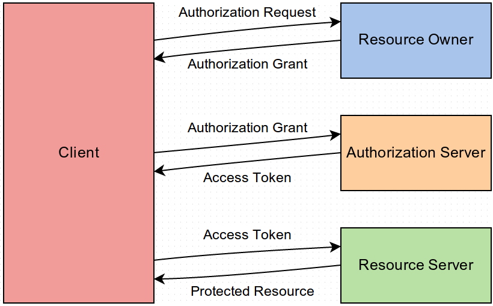

This OAuth 2.0 server is based on Jared Hanson's Passport and Oauth2orize modules. Its focus is to provide existing websites with a straight forward way to become OAuth providers, allowing partner sites to consume their resources easily and with a moderate level of security.
As a provider, the existing website is given control over not only the whitelist of valid partner sites but also the OAuth patterns each partner is allowed to use (i.e. Authorization Code Grant and/or Implicit Grant.)
In OAuth terms, the existing website fills the Authorization Server and Resource Server roles and the partner sites take the Client role. This software provides the Authorization Server functionality and is generally able to integrate without any mandatory software changes to the Resource Server.
Reference implementations are provided for the Client integration code.
This project's source code is freely available under the GNU General Public License.
RFC 6749 defines the abstract protocol flow as:
The participants are:
As a concrete example, if you allow people (i.e. Resource Owners) to log in to your site via Twitter, then you take on the role of Client, Twitter's core is the Resource Server and Twitter's OAuth provider is the Authorization Server.
The point of all of this is: